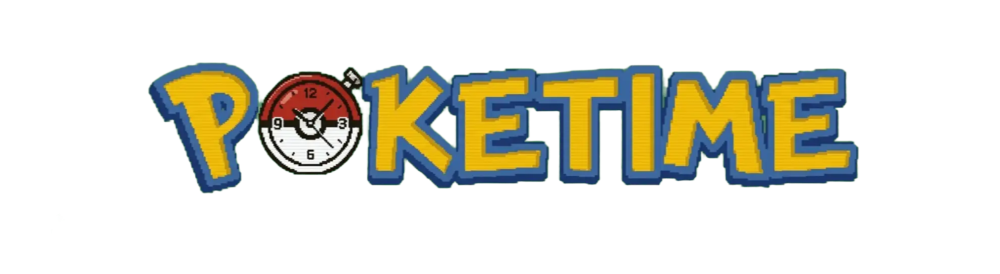
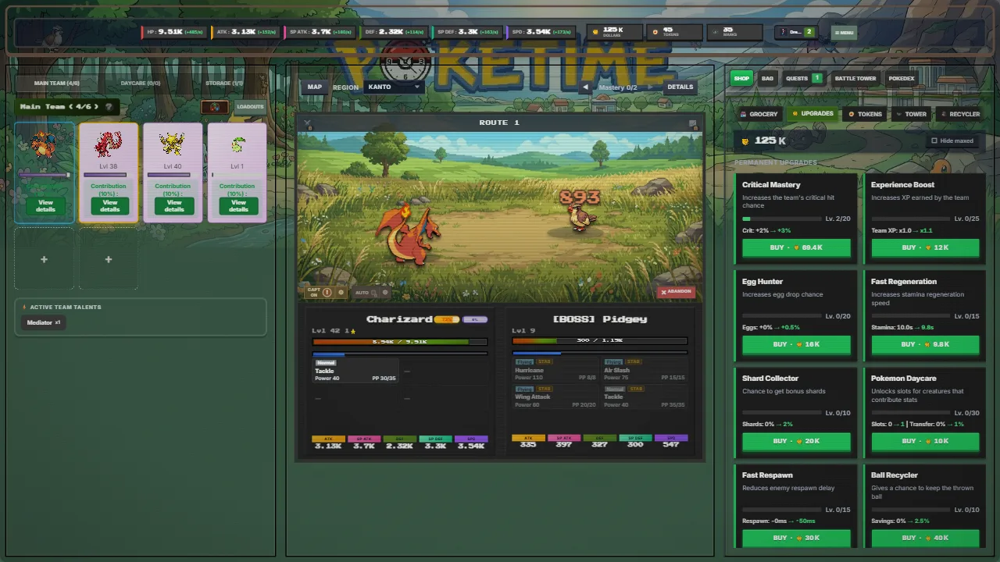
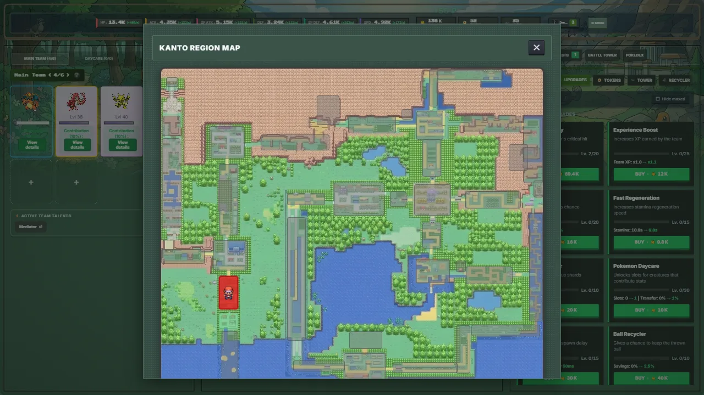

PokéTime – Free Pokémon Idle & Incremental Game
Catch, train and evolve Pokémon across 9 regions in a free idle game that runs right in your browser. Your team keeps fighting and progressing – even while you're away.
▶ Play nowFree · No download · No account · English & French
What is PokéTime?
PokéTime is an unofficial Pokémon fan game in the idle / incremental genre. Build your team, hunt shinies, unlock new zones and watch your numbers grow. Spend a few minutes optimizing your strategy, then let the game run.
9 regions to explore
Travel from Kanto to Paldea – Johto, Hoenn, Sinnoh, Unova, Kalos, Alola and Galar included – each with its own zones, Pokémon and progression.
Idle combat & capture
Real-time battles with types, moves and abilities. Catch Pokémon automatically, level them up and evolve them while the game plays itself.
Progress while offline
Close the tab and come back later: PokéTime computes your offline gains and shows you a report of what you earned.
Champions Tower & Battle Subway
Test your team in endgame challenges with tougher trainers, special rules and rewards.
Expeditions & Team Rocket
Send Pokémon on expeditions, take on quests and face Team Rocket for rare rewards.
Deep collection & mastery
Hatch eggs, complete your Pokédex, unlock team synergies and specialize with a long-term mastery system.
Screenshots



FAQ
Is PokéTime free?
Yes. PokéTime is completely free, with no ads and no account required.
Do I need to download anything?
No. It runs in your web browser on desktop and mobile. An optional Windows desktop app is also available.
Does the game progress while I'm away?
Yes. It is an idle game: your progress is calculated while you're offline and an offline report is shown when you come back.
Where is my save stored?
Locally in your browser. You can export and import your save as a JSON file. Nothing is sent to a game server.
Is PokéTime available in other languages?
The game is available in English and French.
Is PokéTime an official Pokémon game?
No. It is an unofficial fan project, not affiliated with Nintendo, Game Freak or The Pokémon Company.